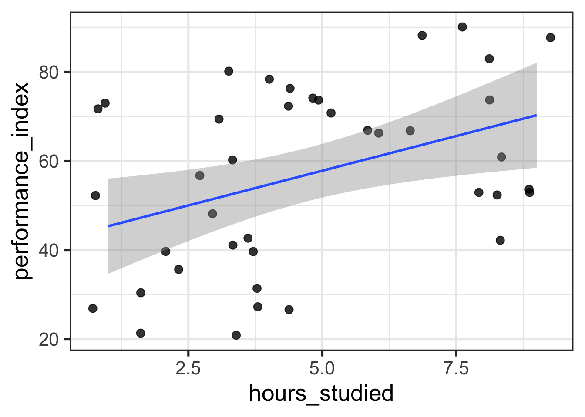

Introduction
It’s been a couple years since I’ve taught intro to stats to the incoming grad students in the Psychology department at UC Davis, and it’s probably the only thing I really find myself missing about graduate school. One of my favorite parts of teaching was the fact that I got to revisit the basics of statistics every year. It was a chance to look at the foundations through the lens of whatever I had learned in the past year. I don’t miss writing as much, but I suppose that I miss that too.
With that in my mind, I want to start writing again, and I’ll start by writing series of short blog posts covering the basics of statistics with the intentions of brushing up on the basics, and indulging my writing whims. Eventually I hope to get to writing posts as a form of learning and retaining new topics. Until then though…I will consider these “warm ups” – they won’t necessarily be thorough, complete, or accurate.1
What are we doing here?
We will cover no epistemic answer here, but rather, we’ll think about the familiar case where you have some data that describes two continuous variables, and you want to know something about how these variables relate. Or maybe, you want to be able to “predict” the value of one variable given that you know the value of another. In either case, most students are taught to invoke the ancient ritual of simple linear regression in order to achieve one or both of these goals.
We will solemnly abide by statistical tradition and call our two variables continuous variables \(x\) and \(y\). Let’s pretend this what it looks like when we plot \(x\) against \(y\)
Linear regression starts with the eponymous idea that we can link each \(x_i\) to each \(y_i\) through a linear relationship of the form
\[ y_i = \beta_0 + \beta_1 x_i \]
This might seem trivial, but I always think it’s worth taking a moment and to think about what we’re saying here – we can completely determine a value of \(y_i\) if we know2:
- the value of \(x_i\)
- the value of some unknown coefficients, \(\beta_0\) and \(\beta_1\)
The equation above expresses a deterministic relationship – only the 3 quantities on the right hand side of the equation are needed to determine the a given value of \(y\). We’ve observed \(x\), but the regression coefficients are unkown.
Let’s pretend we’re omniscient for a moment and say that we know the values for \(\beta_0\) and \(\beta_1\) are \(0\) and \(0.5\), respectively. If we plug in those values in and draw the corresponding regression line, it looks like this
Notice that despite having an equation links our \(x\)’s and \(y\)’s, most points in the plot don’t touch the line. Why might that be?
The world is a big and scary place
Most things on Earth that are interesting enough for people to study tend to be more complex than what we’ve supposed so far. There is probably more than just \(x\) affecting our observed values of \(y\).
As long as we don’t think there’s anything else systematically affecting \(y\), we can attribute anything else affecting \(y\) to randomness. We can account for this randomness by including an additional component in our model
\[ \begin{align} y_i = \beta_0 + \beta_1 x_i + \varepsilon_i \\ \varepsilon_i \sim \text{Normal} \left(0, \sigma^2 \right) \end{align} \]
The updated equation now includes the term \(\varepsilon_i\), which captures any difference between \(y_i\) and its corresponding point on the regression line. Usually, the \(\varepsilon\) are assumed to have a Normal distribution with mean zero and unknown variance \(\sigma^2\). There’s a lot of nice theory that follows from this assumption, but it need not be made (e.g., we could also assume the errors are \(t\)-distributed if we wanted to).
Finding that which is unknown
As much as some of us like to pretend, we are not omniscient, and so some work must be done to find values for \(\beta_0\) and \(\beta_1\). Our estimates for these values will be denoted by a little hat, e.g., \(\hat \beta_1\).
Our first order of business is determining how we should go about estimating values for the regression coefficients.
We’ll set the goal that the values we pick for \(\hat \beta_0\) and \(\hat \beta_1\) should be the ones that minimize the (average) distance between each point in the plot and the predicted values – the values along the lines that we find for each \(x_i\) once we plug in values for \(\hat \beta_0\) and \(\hat \beta_1\). The quantity we seek to minimize is called the sum of squared residuals
\[ \begin{align} \text{Sum of squared residuals} &= \sum_{i=1}^n \left(y_i - \hat y_i \right)^2 \\ &= \sum_{i=1}^n \left(y_i - \hat \beta_0 + \hat \beta_1 x_i \right)^2. \end{align} \]
It turns out that the values for \(\hat \beta_0\) and \(\hat \beta_1\) that accomplish this goal are given by the following equations
\[ \begin{align} \hat \beta_0 &= \bar y - \hat \beta_1 \bar x \end{align} \] \[ \begin{align} \hat \beta_1 &= \frac{\widehat{\text{Cov}(x, y)}}{\hat \sigma^2_x} = \frac{\sum_{i=1}^n (x_i - \bar x) (y_i - \bar y)}{\sum_{i=1}^n (x_i - \bar x)^2} . \end{align} \]
Great, we can now describe the “effect” of \(x\) on \(y\), and we can predict new values of \(y\) given that we know a value of \(x\). We’ll call these predictions \(\hat y\).
\[ \hat y_i = \hat \beta_0 + \hat \beta_1 x_i \]
Are you sure about that?
Okay fine, we have some way estimating our unknowns. Now what? Do these values help us understand whether there is a systematic relationship between \(x\) and \(y\)? Given a new observation of \(x\), how well can we predict the corresponding value of \(y\)?
\(R^2\)
Perhaps the most commonly computed measure of model fit for regression is called \(R^2\), and it’s used to obtain a sense of how well the variable \(x\) “explains” the variation in \(y\). Having values in \([0,1]\), an \(R^2 = 1\) indicates that \(x\) completely explains all the variation in \(y\) whereas \(R^2=0\) indidcates \(x\) does not explain any variation in \(y\).
Despite it’s popularity, \(R^2\) is often a poor measure of model fit. A couple reasons being that it increases with the number of predictor variables, regardless of whether those variables have any association to \(y\), and it can be arbitrarily low in a situation where we have fit the true data-generating model. For more details (and a chuckle), check out section 3.2 of the regression notes here.
\[ \begin{align} R^2 &= 1 - \frac{\text{SSR}}{\text{SST}} \\ \text{SST} &= \sum_{i=1}^n \left(y_i - \bar y \right)^2 \end{align} \]
Mean squared error
Instead of settling for \(R^2\) or some variant of it, we can inspect the mean-squared error (MSE). As the name implies, the MSE tells how large our (squared) residuals are on average. The MSE takes a value of 0 when \(x\) perfectly predicts \(y\), and it can be arbitrarily large otherwise. It provides a direct measure of how well \(x\) predicts \(y\).
\[ \begin{align} \text{MSE} &= \frac{\sum_{i=1}^n \left(\hat y_i - y_i\right)^2}{n} \\ \text{MSE} &= \frac1n \sum_{i=1}^n \hat \varepsilon_i \end{align} \]
Residual variance
Another quantity of interest is the estimated residual variance \(\hat \sigma^2_{\varepsilon}\). This also tells us how much we expect a given \(y_i\) to deviate from our regression line. It’s almost computed almost exactly as the MSE, but it differs in its denominator. This difference makes it an unbiased estimator of the true residual variance, \(\sigma^2\)
\[ \begin{align} \hat \sigma^2_{\varepsilon} &= \frac{\sum_{i=1}^n \left(\hat y_i - y_i\right)^2}{n - p - 1} \\ &= \frac{1}{n-2}\sum_{i=1}^n \hat \varepsilon_i . \end{align} \]
Note that the degrees of freedom account for the number of parameters we estimated. So the degrees of freedom are given by \(n-p-1\), where \(p\) is the number of predictor variables and the one comes from accounting for the fact that we estimated an intercept.
The residual variance is assumed to be constant across all values of \(x\). That is \(E[\sigma^2_{\varepsilon} | x] = \sigma^2_{\varepsilon}\). At least for the data that arises from social-behavioral studies, this is often an unrealistic assumption. Two ways we can avoid this assumption by taking a weighted least-squares approach or by directly modeling the variance.
Putting our coefficients to the test
Right right, so we can assess whether our model is doing it’s job (“explaining” the current variation in \(y\) or predicting new values in \(y\)). BUT, what if we wanted to say something about whether \(\beta_1\) was statistically distinguishable from \(0\)? That is, what if we wanted to say that the “effect” of \(x\) is non-zero?
The coefficient \(\beta_1\) is a random variable, and so we can calculate it’s standard error, and consequently, we can perform a hypothesis test for the following hypotheses
\[ \begin{aligned} H_0: \beta_1 &= \beta \\ & \text{vs.} \\ H_1: \beta_1 & \neq \beta \end{aligned} \]
Usually, \(\beta = 0\), so we test that the regression coefficient for \(x\) is equal to 0, but we could pick any ol’ number.
The standard error of \(\hat \beta_1\) is given by
\[ \begin{aligned} \text{Var}(\hat \beta_1) &= \frac{\hat \sigma^2_{\varepsilon}}{\sum_{i=1}^n (x_i - \bar x)^2} \\ \text{SE}(\hat \beta_1) &= \sqrt{ \text{Var}(\hat \beta_1) }. \end{aligned} \]
With the standard error in hand, we can calculate a \(t\)-statistic as follows
\[ t = \frac{\hat \beta - \beta}{\text{SE}(\hat \beta)} %\sim \text{Student-}t\left(\nu = n-2\right) \]
and compute a \(p\)-value by referencing it against a \(t\)-distribution with degrees of freedom \(\nu = n-2\).
Running through the calculations
Below, I use R to grab a sample of 40 observations from an academic performance dataset and fit a regression with the number of hours a student studied predicting how well they performed on an exam. I then “manually” compute the quantities discussed above to see that they indeed match the output from R’s lm.
library(nanoparquet, include.only = "read_parquet")
library(dplyr)
library(glue)
library(ggplot2)
theme_set(theme_bw(base_size = 20))set.seed(1)
performance_df <- read_parquet("data/processed/student_performance.parquet") %>%
slice_sample(n = 40)
glimpse(performance_df)Rows: 40
Columns: 6
$ hours_studied <dbl> 5, 5, 9, 4, 2, 1, 3, 8, 4, 3, 8, 8, 1…
$ previous_scores <dbl> 84, 86, 56, 62, 60, 54, 70, 69, 56, 7…
$ extracurricular_activities <fct> Yes, Yes, Yes, Yes, Yes, No, No, Yes,…
$ sleep_hours <dbl> 7, 6, 6, 6, 8, 5, 4, 4, 5, 5, 5, 7, 9…
$ sample_question_papers_practiced <dbl> 1, 4, 6, 9, 0, 0, 1, 4, 8, 4, 2, 0, 4…
$ performance_index <dbl> 74, 71, 53, 43, 36, 27, 48, 61, 40, 5…ggplot(performance_df, aes(hours_studied, performance_index)) +
geom_jitter(size = 3, alpha = 0.8) +
geom_smooth(method = "lm") 
model_hs <- lm(performance_index ~ hours_studied, performance_df)
summary(model_hs)
Call:
lm(formula = performance_index ~ hours_studied, data = performance_df)
Residuals:
Min 1Q Median 3Q Max
-30.575 -15.435 4.019 16.472 28.425
Coefficients:
Estimate Std. Error t value Pr(>|t|)
(Intercept) 42.226 6.295 6.708 6.12e-08 ***
hours_studied 3.116 1.175 2.651 0.0116 *
---
Signif. codes: 0 '***' 0.001 '**' 0.01 '*' 0.05 '.' 0.1 ' ' 1
Residual standard error: 18.73 on 38 degrees of freedom
Multiple R-squared: 0.1561, Adjusted R-squared: 0.1339
F-statistic: 7.028 on 1 and 38 DF, p-value: 0.01164n <- nrow(performance_df)
x <- performance_df$hours_studied
y <- performance_df$performance_indexb1hat <- cov(x, y) / var(x)
b0hat <- mean(y) - b1hat * mean(x)
glue("b0 hat = {round(b0hat, 3)}")b0 hat = 42.226glue("b1 hat = {round(b1hat, 3)}")b1 hat = 3.116# predictions
yhat <- b0hat + b1hat * x
# residuals
ehat <- y - yhatssr <- sum((y - yhat)^2)
sst <- sum((y - mean(y))^2)
r2 <- 1 - (ssr / sst)
glue("R^2 = {round(r2, 3)}")R^2 = 0.156mse <- sum(ehat^2) / n
glue("MSE = {round(mse, 3)}")MSE = 333.389# residuals have mean 0
var_ehat <- sum(ehat^2) / (n - 2)
sd_ehat <- sqrt(var_ehat)
glue("residual sd = {round(sd_ehat, 3)}")residual sd = 18.733var_b1hat <- var_ehat / (sum((x - mean(x))^2))
se_b1hat <- sqrt(var_b1hat)
glue("std err b1 = {round(se_b1hat, 3)}")std err b1 = 1.175t_b1hat <- b1hat / se_b1hat
glue("t-stat b1 = {round(t_b1hat, 3)}")t-stat b1 = 2.651pval_b1hat <- (1 - pt(t_b1hat, df = n - 2)) * 2
glue("p-value = {round(pval_b1hat, 3)}")p-value = 0.012